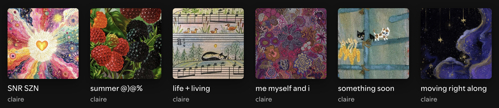

My Spotify playlists over the past year (newest to oldest, left to right).
I listen to a lot of music, and I listen to music a lot. I listen to my collection of CDs and
my carefully curated Spotify playlists. Like many people, the music I listen to is correlated to my
mood. I often intentionally listen to songs that will enhance my current mood or induce a different
mood.
Below are songs I listened to yesterday, and the mood I was in while I was listening.
- Songs & My Mood
Song
Artist
Mood
Home
Mac DeMarco
Nostalgic
Blue Monday
New Order
Focused
Ride Into the Sun
Lou Reed
Content
Those are just a few examples of different songs that make me feel different emotions. I like to have
variation on my playlists and CD mixes. I like so many genres of music, and I've often wondered what
it is that makes me like a song or artist. I've decided it must be how the music makes me feel. When
I was going through a difficult breakup last year, I would listen to "sad" artists (e.g. Alex G,
Elliot Smith, Big Thief). I found comfort in the music reflecting my emotions. When I'm
hyping myself up for something like a big exam, I will listen to artists that make me feel confident
(e.g. Death Grips, Kendrick Lamar, Tyler, The Creator).
I have always found solace in music. No matter what my current mood is or what I want it to be,
there's always a song I can listen to that will speak to my soul in a way I didn't know was
possible.
Music allows me to feel my emotions in such a clear way that I've never quite been able to achieve
on my
own. I love to think about the sheer amount of music in the world and the infinite possibility of
discovering new music I enjoy because, to me, it's not just a song. It can be something so much
more. A new part of myself.
My Guitar Journey
By Claire Cyporyn -
Paul McCartney playing acoustic guitar.
My entire life I have always loved music. Throughout my childhood I played piano, danced, and sang my
little heart out. When I was around 11, my grandmother bought me an acoustic guitar. I took lessons
for a while, but I was frustrated with my lack of progress. It hurt my fingers to fret the notes,
and the pain discouraged me from practicing. Eventually, I quit. I didn't pick my guitar back up for
many years.
At the start of 2025, the idea of learning guitar began to interest me again. A lot of the music I
listen to is guitar focused, and the idea of being able to play some of my favorite songs myself was
exciting to me. For a few months, I tried half-heartedly to learn. I would pick a song I liked and
jump right in to learning the chords, but this proved to be a difficult approach for me. I didn't
make much progress for a while.
Things changed at the start of summer, around May. I had more free time on my hands after the end of
the semester. I had taken a recent interest in The Beatles, so I decided to try to learn a song by
them called Two Of Us. Once I mastered that
one song, I took off. My fingers became callused from practicing, and fretting notes was no longer
painful. Chord changes and strumming were the hardest parts of learning guitar for me, and with each
song I learned, I improved immensely.
By the end of July, I had taken on the beginner guitarist's challenge of learning Blackbird by The
Beatles. It took me weeks to master it. Once I could play along with Paul McCartney in the recording
with ease, I felt triumph. Now, I'm slowly learning barre chords as I get stronger. I love playing
guitar. I'm not all that concerned with continuous progress. All I want is to keep playing as long
as I enjoy it. I would recommend learning a musical instrument to anyone with interest. It can be a
truly rewarding journey.